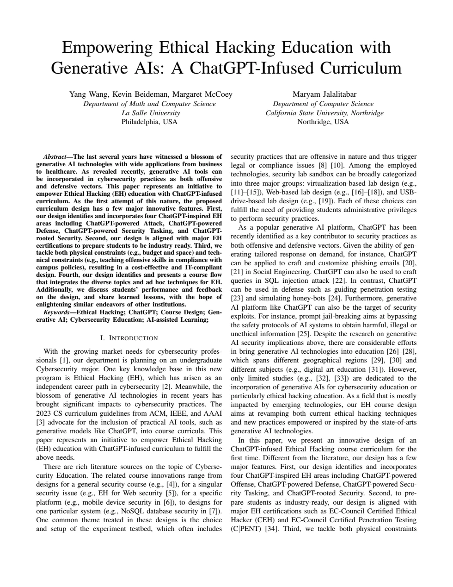

This project investigated the practical impact of generative AI on information security and ethical hacking education. We studied opportunities for faster research, scripting, reporting, and classroom support alongside risks such as inaccurate output, unsafe guidance, social engineering, and misuse.
My work included analyzing security-relevant tasks, documenting emerging prompt techniques, mapping AI assistance across ethical hacking phases, and helping translate the findings into presentations and a published curriculum design.
- Role Undergraduate Researcher
- Research Advisor Dr. Yang Wang
- Publication IEEE ISEC 2025
- Presentation MSCHE 2024
Where generative AI changes security work.
AI-Assisted Attack
Examined phishing, social engineering, malicious code generation, and the accessibility risks created by automated assistance.
AI-Assisted Defense
Studied vulnerability analysis, threat modeling, policy support, task automation, and the need to verify generated output.
Ethical Hacking Education
Mapped AI across reconnaissance, scanning, access, reporting, and classroom labs while emphasizing guardrails and responsible use.
Security research presented visually.

A ChatGPT-infused ethical hacking curriculum.
